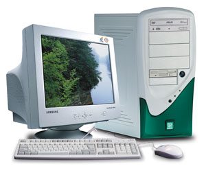
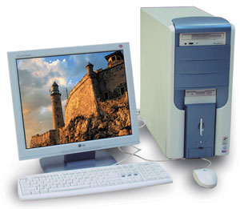
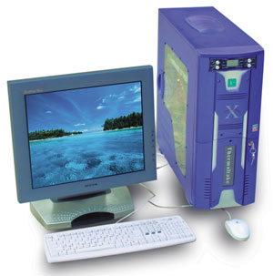

Андрей Ездаков
Основная масса компьютеров, формирующих корпоративные информационные системы, относится к категории "корпоративных рабочих мест" (КРМ). Под это определение на сегодняшний день подпадает широкий спектр различных устройств, начиная от сетевого компьютера или тонкого клиента, т. е. устройства с ограниченными собственными ресурсами, и заканчивая мощными, высокопроизводительными, возможно, даже многопроцессорными рабочими станциями. Но основную нагрузку в КИС по-прежнему несут на себе привычные настольные ПК. Даже при том, что во всем мире растет доля продаж ноутбуков, тонких клиентов, планшетных ПК и других разновидностей компьютера, настольные решения составляют пока более половины всех продаваемых компьютеров.
Один из ведущих производителей ПК в нашей стране - компания "Формоза" (http://www.formoza.ru), которая, по оценкам ряда аналитических агентств, лидирует по объему продаж ПК собственной сборки в России. Сейчас компания предлагает три основных семейства настольных компьютеров различной стоимости и производительности, ориентированных на решение задач разного уровня сложности.
Все модели ПК компании имеют единый формат обозначения - Formoza [Y][хxx][Z]. Название каждого устройства начинается c марки Formoza, далее может следовать до трех групп индексов. Первый индекс, Y - цифра, соответствующая номеру поколения процессора, использованного в данном ПК. Второй, xxx - трехзначное число, указывающее тактовую частоту или соответствующий рейтинг процессора (деленные на 100). Третий, Z - буква латинского алфавита, которая служит спецификатором используемого процессора, конфигурации компьютера и ОС.
Например, обозначение Formoza 7xxxAS означает, что данный ПК собран на базе процессора 7-го поколения Athlon с переменными параметрами тактовой частоты и имеет нормальную (т. е. не облегченную и не усиленную) конфигурацию.
Компьютеры начального уровня
Самые недорогие настольные решения компании "Формоза" относятся к категории компьютеров начального уровня. Они предназначены для офисов начинающих компаний или для таких КРМ, для которых не требуется высокая вычислительная и графическая производительность. Кроме того, эти ПК можно рекомендовать домашним пользователям для создания небольшой Интернет-станции или мультимедийного центра.
В семейство компьютеров начального уровня (рис. 1) входят четыре базовые модели. Это Formoza 7xxxL, Formoza 7xxxC, Formoza 6100V и Formoza 6080V.
|  | Рис. 1. Компьютер Formoza начального уровня.
|
Первая модель представляет собой легко модернизируемый для выполнения конкретных офисных или домашних задач или расширения функциональных возможностей настольный ПК. На основе Formoza 7xxxL, по мнению производителя, разумно развертывать офисную станцию или домашний компьютер начального уровня. Его производительности достаточно для работы современных офисных приложений, организации доступа в Интернет или домашнего мультимедийного проигрывателя.
Компьютер Formoza 7xxxL выпускается на базе процессоров Intel Celeron с тактовой частотой 2-2,4 ГГц и частотой внешней шины 400 МГц и системных плат с набором микросхем SIS 651. Например, в этой модели может использоваться плата Gigabyte GA-8SIMLH-P с поддержкой разъема Socket-478, ОЗУ типа DDR, слота AGP для установки внешнего видеоадаптера, интегрированных аудио-, видео- и сетевого адаптера.
Стандартный видеорежим поддерживается интегрированным графическим ядром SIS 315 256bit с аппаратным ускорением некоторых функций MPEG-2 декодирования. Звуковая подсистема базируется на интегрированном аудиоадаптере Realtek ALC650 AC'97 с шестиканальным кодеком. Сетевой интерфейс обеспечивается интегрированным сетевым контроллером Realtek 8101L.
Объем оперативной памяти у этой модели составляет 256 Мбайт (модули PC2100 DDR SDRAM с частотой работы шины 266 МГц); емкость жесткого диска стандарта UDMA100 со скоростью вращения шпинделя 7200 об./мин равна 40 Гбайт. Компьютер также оснащается стандартными устройствами для обработки внешних носителей - 3,5-дюйм флоппи-дисководом и 52-скоростным приводом CD-ROM. ПК собирается в корпусе Miditower LinkWorld B313U, имеет габариты 340х200х420 мм и массу 14 кг.
Внешние интерфейсы Formoza 7xxxL - это два порта PS/2 для подключения мыши и клавиатуры; сетевой порт RJ-45; стандартный VGA-выход; три аудиоразъема (вход, выход, микрофон или шестиканальный звук); один параллельный и один последовательный порт. Для подключения различных внешних устройств и возможности функционального расширения компьютер оснащен шестью портами USB версии 2.0.
Модель Formoza 7xxxC тоже относится к категории "ПК начального уровня", но имеет массу вдвое меньше - всего 7 кг. Компьютеры Formoza 7xxxC позиционируются компанией "Формоза" как недорогие офисные станции для использования с различными стандартными средствами обработки документов и Интернет-приложениями. Как и предыдущая модель, этот компьютер строится на базе процессора Intel Celeron с несколько меньшим диапазоном тактовых частот (от 2 до 2,2 ГГц). В отличие от Formoza 7xxxL, в таких устройствах используются платы с НМС Intel 845GL.
При сборке этой модели используется корпус Flex ATX LinkWorld 616 с габаритами 320х100х350 мм. В него устанавливается системная плата производства Intel на базе НМС i845GL с форм-фактором mATX, на которой помимо разъема стандарта Socket-478 интегрированы аудио- и видеоадаптеры и сетевой контроллер стандарта 10/100 Base-T.
В компьютерах Formoza 7xxxC применяется оперативная память типа PC133 SDRAM (DIMM-модули), объем которой составляет 256 Мбайт, и такой же жесткий диск, как и в предыдущей модели. Для сменных носителей предусмотрен стандартный флоппи-дисковод и 16-скоростной привод DVD-ROM. Интегрированная графическая подсистема построена на базе контроллера Intel Extreme Graphics. Совместимая со стандартом AC'97 аудиоподсистема использует кодек STAC9750/66 компании SigmaTel. Внешние интерфейсы компьютера в точности такие же, как у модели Formoza 7xxxL.
Третий представитель ПК начального уровня от компании "Формоза", Formoza 6100V, подходит для использования как в офисе, так и дома. Эта машина построена на базе системной платы Via EPIA V10000 (набор микросхем Via Apollo CLE 266) с интегрированным процессором Via C3 EBGA с тактовой частотой 1 ГГц и интегрированной видеокартой Via Unichrome AGP со встроенным аппаратным MPEG-2 декодером. Поэтому одно из распространенных его применений - в качестве домашнего мультимедийного проигрывателя.
Помимо интегрированного процессора и видеоподсистемы, на системной плате формата Mini-ITX имеются разъемы для установки модулей памяти стандарта DDR PC2100, TV-выход (композитный и S-видео) и сетевой адаптер. Объем устанавливаемого ОЗУ равен 256 Мбайт (частота шины 266 МГц), емкость жесткого диска составляет 40 Гбайт, имеются привод DVD-ROM 16X и стандартный флоппи-дисковод.
В Formoza 6100V используется звуковая подсистема Via VT 1616 AC'97 (шестиканальный кодек), сетевой контроллер Via VT6103 10/100 Base-T Ethernet PHY и контроллер шины 1394 Via VT6307S IEEE 1394 Firewire.
Этот небольшой ПК массой тоже всего 7 кг монтируется в корпусе модели Flex ATX LW616 с габаритами 320х100х350 мм. Помимо двух разъемов PS/2 для клавиатуры и мыши в нем имеются: сетевой порт RJ-45, композитный видеовыход, порты S-Video и VGA, последовательный и параллельный, два выхода USB версии 2.0; аудиовыход с возможностью переназначения на SPDIF и три аудиоразъема: вход/выход/микрофон или аналоговый звук на шесть каналов.
Последний из компьютеров начального уровня - Formoza 6080V, собираемый в корпусе FlexATX LinkWorld 616 с габаритами 320х100х350 мм, также имеет массу 7 кг, собирается на базе системной платы Via с интегрированным процессором и имеет примерно тот же спектр применения, что и Formoza 6100V. В нем используется набор микросхем Via Apollo PLE 133, процессор Via C3 EBGA имеет тактовую частоту 800 МГц. Системная плата EPIA V8000 Via PLE133 аналогична описанной выше, но поддерживает другой тип оперативной памяти - SDRAM PC133.
Объем ОЗУ у этой модели тоже меньше - 128 Мбайт, в ней устанавливается и жесткий диск 20 Гбайт. Помимо 3,5-дюйм флоппи-дисковода в ПК устанавливается 52-скоростной CD-ROM. Необходимые режимы работы подсистем поддерживают интегрированная видеокарта Trident, аудиокодек Via VT 1612A AC'97 и сетевой контроллер Via VT6103 10/100 Base-T Ethernet PHY. Набор внешних интерфейсов в Formoza 6080V идентичен предыдущей модели, за исключением интерфейса IEEE 1394.
Персональные компьютеры
Следующая категория ПК компании "Формоза" называется "персональные компьютеры". В нее входят более производительные универсальные машины, предназначенные для решения широкого круга задач в различных областях. Устройства этой категории более мощные, обладают широкими возможностями дальнейшей модернизации и могут работать с множеством периферийных устройств.
В этой категории (рис. 2) "Формоза" снова предлагает компьютеры четырех конфигураций - это модели Formoza 7xxxAS, Formoza 7xxxM, Formoza 7xxxS и Formoza 7xxxG, созданные на элементной базе от различных производителей.
|  | Рис. 2. Устройство Formoza категории "персональный компьютер".
|
Модель Formoza 7xxxAS в основном предполагается использовать как домашний компьютер. Она выпускается на базе процессоров AMD Athlon XP с условными параметрами тактовой частоты 2000+ - 2400+ и системных плат с НМС Via Apollo KT-400. В такой ПК, например, может быть установлена системная плата Albatron Socket-A, поддерживающая частоту шины 333 МГц, на которой реализованы разъемы для установки оперативной памяти типа DDR PC3200 и слот AGP 8x. На этой плате имеется и встроенная звуковая подсистема - шестиканальный кодек Realtek ALC650 AC'97.
Стандартный объем ОЗУ DDR SDRAM в модели Formoza 7xxxAS - 256 Мбайт, емкость жесткого диска UDMA 100 составляет 40 Гбайт. Для поддержки графических режимов устанавливается видеоплата GeForce 4 MX-440 с 64 Мбайт собственной видеопамяти. Из устройств для внешних носителей имеются стандартный 3,5-дюйм дисковод и привод СD-ROM 52X. Монтируется этот ПК в корпусе Miditower LinkWorld A313 с габаритами 340х200х420 мм и имеет массу 14 кг.
Набор внешних интерфейсов в модели Formoza 7xxxAS отличается от 7xxxL и 7xxxC наличием двух последовательных портов вместо одного и опционально устанавливаемой сетевой платы 3Com 10/100 Ethernet LAN.
Вторая модель категории "персональный компьютер", Formoza 7xxxM, собирается в корпусе Miditower LinkWorld H313 (519х248х490 мм) и позиционируется прежде всего как компьютер для дома или домашнего офиса. Такие машины построены уже на базе процессоров Intel Pentium 4 с тактовой частотой 2,4-2,66 ГГц и частотой системной шины 533 МГц. В них используются системные платы Albatron Socket-478 с набором микросхем Intel 845PE (форм-фактор ATX), в которых имеются три разъема для установки DIMM-модулей памяти типа DDR SDRAM PC2700.
Объем ОЗУ у таких компьютеров составляет уже 512 Мбайт, а емкость жесткого диска - 60 Гбайт. Внешняя видеоплата Nvidia GeForce FX 5200 со 128 Мбайт собственной видеопамяти поддерживает широкий спектр графических режимов. Помимо стандартного флоппи-дисковода в Formoza 7xxxM имеется комбинированный привод CD-RW/DVD-ROM 48X/24X/48X/12X. Интегрированная звуковая подсистема Realtek ALC650 AC'97 и опционально устанавливаемый сетевой контроллер 3Com 10/100 Ethernet LAN дополняют возможности этого ПК. Набор его внешних интерфейсов аналогичен предыдущей модели, но дополнен разъемом DVI.
Третья модель, Formoza 7xxxS, ориентированная на пользователей категории SOHO или домашних пользователей, оснащается процессором Intel Celeron с тактовой частотой от 2 до 2,4 ГГц. Как и в предыдущей модели, в ней устанавливаются системные платы с набором микросхем Intel 845PE.
Параметры Formoza 7xxxS практически идентичны более мощной предыдущей модели. Однако она дешевле, поскольку объем оперативной памяти в ней сокращен до 256 Мбайт (стандарта PC2700 DDR SDRAM), жесткий диск имеет емкость 40, а не 60 Гбайт, вместо же комбинированного привода используется более простой - CD-RW 52X/24X/52X. Кроме того, в таких компьютерах устанавливается видеоплата GeForce 4 MX-440 с меньшим объемом собственной видеопамяти - 64 Мбайт.
Наконец, четвертая модель категории "персональный компьютер", Formoza 7xxxG, представляет собой еще более "легкую" и дешевую разновидность компьютера для домашних пользователей и офисов. Она тоже базируется на процессорах Intel Celeron с тактовой частотой от 2 до 2,4 ГГц, но в ней используются системные платы с набором микросхем Intel 845GE со встроенным графическим ядром. Такие платы форм-фактора mATX имеют только два разъема для установки модулей оперативной памяти типа DDR SDRAM PC2100.
Объем ОЗУ у этих машин составляет 256 Мбайт, а емкость жесткого диска - 40 Гбайт. Для работы с внешними носителями используются 3,5-дюйм флоппи-дисковод и 52-скоростной привод CD-ROM. Видеорежимы обеспечиваются интегрированным графическим контроллером Intel Extreme Graphics, а передачу звука реализует подсистема Realtek ALC201 AC'97. Опционально может быть установлен сетевой контроллер Intel PRO 10/100 EV LAN. Компьютер Formoza 7xxxG собирается в корпусе Miditower LinkWorld B313U с габаритами 455х233х380 мм, имеет массу 12 кг и обладает стандартным набором внешних интерфейсов, аналогичным моделям категории "начального уровня" (с одним последовательным портом).
Высокопроизводительные компьютеры
Третья, самая немногочисленная категория ПК компании "Формоза" называется "высокопроизводительные компьютеры". Эти наиболее мощные в модельном ряду компании машины предназначены для требовательных к аппаратным ресурсам пользователей. Они имеют высокую производительность и отличаются большими возможностями расширения функционала. Такие машины находят применение как для решения большинства офисных задач, так и в домашнем пользовании. Компания позиционирует их для работы с профессиональными приложениями в области дизайна и графики, инженерных и научных расчетов, поддержки САПР и систем моделирования. Кроме того, эти компьютеры разумно использовать для компьютерного спорта и создания игровых классов.
В категорию "высокопроизводительных компьютеров" (рис. 3) входят две модели - Formoza 7xxxAM и Formoza 7xxxE.
|  | Рис. 3. Высокопроизводительный компьютер Formoza.
|
Первая модель выпускается на базе процессоров AMD Athlon XP с ядром Barton и условными параметрами тактовой частоты 2500+ - 3200+ и системных плат на базе НМС Via Apollo KT-600. Такие ПК ориентированы на работу с профессиональными приложениями в области дизайна и графики, на сложные расчеты и моделирование.
Объем оперативной памяти стандарта DDR SDRAM PC2700 или PC3200, устанавливаемой в ПК Formoza 7xxxAM, составляет 512 Мбайт, емкость жесткого диска - 60 Гбайт. Помимо флоппи-дисковода в компьютере имеется привод CD-RW 52X/24X/52X. Графические режимы поддерживаются видеоплатой GeForce FX 5200 со 128 Мбайт собственной видеопамяти. Интегрированная шестиканальная звуковая подсистема Realtek ALC650 AC'97 и опционально устанавливаемый сетевой контроллер 3Com 10/100 Ethernet LAN завершают перечень компонентов этого ПК. Набор внешних интерфейсов включает два разъема PS/2, параллельный и два последовательных порта, шесть портов USB 2.0 и три аудиоразъема.
При габаритах 429х198х470 мм модель Formoza 7xxxAM, монтируемая в корпусе Miditower LinkWorld A313, имеет массу 15 кг.
Самая высокопроизводительная модель ПК, предлагаемая компанией "Формоза", Formoza 7xxxE, собирается в корпусе Miditower InWin S535 (габариты - 436х198х476 мм, масса - 15 кг). Этот компьютер построен на процессоре Intel Pentium 4 с тактовой частотой 2,4-3 ГГц и частотой системной шины 800 МГц. В нем устанавливается системная плата форм-фактора ATX - Albatron Socket-478 с набором микросхем Intel 865PE, поддерживающая технологию Hyper-Threading и двухканальный режим работы оперативной памяти. Модель предназначена для использования в качестве офисной графической станции или мощного домашнего ПК.
На системной плате имеется четыре разъема для установки модулей оперативной памяти типа DDR SDRAM PC3200. В стандартной комплектации объем ОЗУ равен 512 Мбайт. Жесткий диск UDMA 100 имеет емкость 80 Гбайт. В Formoza 7xxxE установлены 3,5-дюйм флоппи-дисковод и комбинированный привод CD-RW/DVD-ROM 48X/24X/48X/12X. Графическая подсистема базируется на видеоплате GeForce FX 5600 со 128 Мбайт собственной видеопамяти. Звуковая подсистема и сетевой интерфейс компьютера такие же, как у Formoza 7xxxAM.
Вместо заключения
Российская группа компаний "Формоза" предлагает на отечественном рынке КРМ, где конкурируют как известные мировые, так и российские производители, широкий спектр настольных решений с высоким уровнем качества, трехлетней гарантией и хорошими сервисными условиями.
"Формоза" предлагает корпоративным заказчикам ИТ-решения различного масштаба и сложности - от поставки рабочих мест в офис малого предприятия до комплексного решения для информационной системы учреждения федерального уровня. Примерами таких решений могут служить поставки техники в Казначейство Республики Башкортостан, Государственный космический научно-производственный центр им. Хруничева, НПО "Машиностроение", НПО "СевМаш", Департамент образования г. Москвы, Министерство образования и науки Республики Бурятия, администрацию Президента Чувашской Республики, "АвтоВАЗ", Финансовую академию.
КРМ "Формозы" в Казначействе БашкортостанаОсенью 2002 г. НПКЦ "Формоза-Альтаир", входящая в Группу компаний "Формоза", осуществила автоматизацию региональных представительств Казначейства Республики Башкортостан, расположенных по всей территории региона. В рамках проекта НПКЦ поставила 500 ПК Formoza (в комплекте с мониторами), 16 серверов и необходимое сетевое и периферийное оборудование.
|
Корпоративные поставки компьютерной техники под торговой маркой Formoza осуществляются и региональными бизнес-партнерами компании. Наличие отлаженной системы логистики и разветвленной сети сервисных центров (более 100 по всей России) позволяет "Формозе" поставлять и обслуживать технику практически в любом регионе РФ. Кроме того, компания создала сеть учебно-методических площадок на базе общеобразовательных учреждений, в которую входят средние школы, средние специальные и высшие учебные заведения. Компьютерными классами и автоматизированными рабочими местами производства компании "Формоза" оборудовано более 1000 московских и региональных школ и вузов. Для их технической поддержки создана специальная система бесплатного сервисного и технического сопровождения вычислительной техники - "Школьный сервис".
Автор благодарит Татьяну Янкину, Дарью Прохорову и других сотрудников компании "Формоза" за помощь при подготовке этого материала.